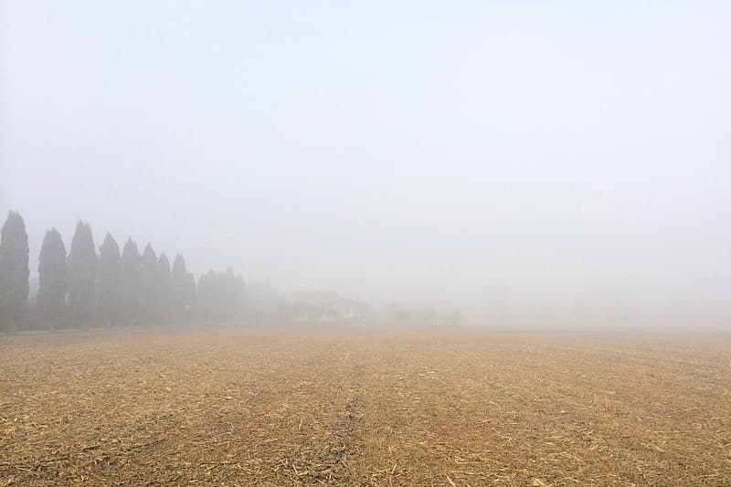
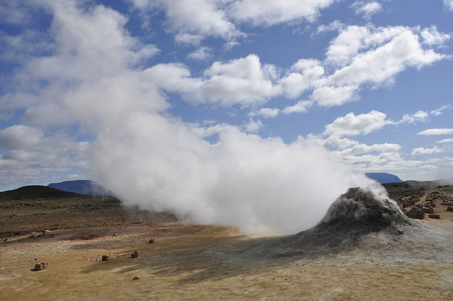

Clear Fields YellowstoneGrand Teton Park

Open Field-under-cloudy-skyScenic River, OregonSeasons in prestonSnow Storm at Idaho FallSunset over IF TempleSunny Morning In Oregon CoastChanging of Season in RexburgLightiningBlowing winds, Preston

Hot Springs